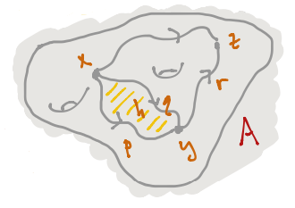
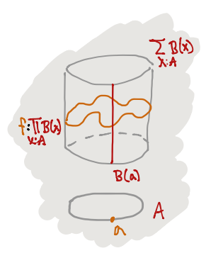

Transcript: \(\infty\)-Category Theory for Undergraduates
This is the transcript of the slides from Emily Riehl's talk \(\infty\)-Category Theory for Undergraduates (video), which is absolutely a great introduction to modern type theory and mathematics.
- Berkeley Logic Colloquium
- Emily Riehl
- 7 May 2020
Thesis: If future undergraduates' foundational understanding of mathematical proof were based on Homotopy Type Theory (HoTT) then we could teach them \(\infty\)-category theory - much as we teach today's undergraduates abstract algebra.
- ACT I: Undergraduate-level informal HoTT
- ACT II: \(\infty\)-category theory
ACT I: Undergraduate-level informal HoTT
Dependant type theory is a formal system of inference rules, that combine to form derivations. There are four kinds of "well-formed formulas" called judgements, including:
- \(\Gamma \vdash A \ type\) - "\(A\) is a type"
- \(\Gamma \vdash a : A\) - "\(a\) is a term of type \(A\)"
Here \(\Gamma\) is a context which declares the types of any variables that appear. e.g
- \(\Gamma, x : A \vdash B(x) \ type\) - "a family of types over \(A\)"
- \(\Gamma, x : A \vdash b(x) : B(x)\) - "a family of terms"
- \(n : \mathbb{N} \vdash \mathbb{R}^n \ type\)
- \(n : \mathbb{N} \vdash \bar{0} : \mathbb{R}^n\)
There are four kinds of rules (in place of axioms) that can be used in derivations:
- Formation rules form new types:
- \(^\times\)formation: given types \(A\) and \(B\) there is a product type \(A \times B\) \[\frac{\Gamma \vdash A \ type \qquad \Gamma \vdash B \ type}{\Gamma \vdash A \times B \ type}\]
- Introduction rules introduce new terms:
- \(^\times\)introduction: given terms \(a : A\) and \(b : B\) there is a term \((a, b) : A \times B\) \[\frac{\Gamma \vdash a : A \qquad \Gamma \vdash b : B}{\Gamma \vdash (a, b) : A \times B}\]
- Elimination rules use the new terms:
- \(^\times\)elimination: given a term \(p : A \times B\) there are terms \(pr_1(p) : A\) and \(pr_2(p) : B\) \[\frac{\Gamma \vdash p : A \times B}{\Gamma \vdash pr_1(p) : A}\] \[\frac{\Gamma \vdash p : A \times B}{\Gamma \vdash pr_2(p) : B}\]
- Computation rules relate
2and3
Function types are generated by the rules:
- \(^\rightarrow\)formation: given types \(A\) and \(B\), there is a type \(A \rightarrow B\)
- \(^\rightarrow\)introduction: if in the context of any term \(x : A\) there is a term \(b(x) : B\), then there is a term \(\lambda x . b(x) : A \rightarrow B\) \[\frac{\Gamma, x : A \vdash b(x) : B}{\Gamma \vdash \lambda x . b(x) : A \rightarrow B}\]
- \(^\rightarrow\)elimination: given terms \(f : A \rightarrow B\) and \(a : A\), there is a term \(f(a) : B\)
- And two computation rules1
A proposition is proven by constructing a term in the type that encodes its statement.
Proposition: For any types \(P\) and \(Q\), there is a term \(modus{\text -}ponens : P \times (P \rightarrow Q) \rightarrow Q\).
Proof: By \(^\rightarrow\)introduction we must explain how to use a term \(x : P \times (P \rightarrow Q)\) to prove a term of type \(Q\). By \(^\times\)elimination from \(x\) we get terms \(pr_1(x) : P\) and \(pr_2(x) : P \rightarrow Q\). By \(^\rightarrow\)elimination then \((pr_2(x))(pr_1(x)) : Q\). Ie, \(modus{\text -}ponens :\equiv \lambda x . (pr_2(x))(pr_1(x))\). \(\square\)
Propositions concerning mathematical equality are governed by Per Martin-Löf's identity types:
- \(^=\)formation: given a type \(A\) and two terms \(x, y : A\), there is a type \(x =_A y\)
- \(^=\)introduction: given a term \(x : A\), there is a term \(refl_x : x =_A x\)
The elimination rule for the identity type can be packaged into the principal of path induction:
Path induction: Given any type family \(\Gamma, x, y : A, p : x =_A y \vdash B(x, y, p) \ type\), to produce a term of type \(B(x, y, p)\) it suffices to assume \(y\) is \(x\) and \(p\) is \(refl_x\).
Lemma: For any \(x, y : A\), \((x =_A y) \rightarrow (y =_A x)\).
Proof: By \(^\rightarrow\)introduction, we may assume \(p : x =_A y\), and must produce a term of type \(y =_A x\). By path induction, to inhabit the type family \(B(x, y, p) :\equiv y =_A x\), it suffices to assume \(y\) is \(x\) and \(p\) is \(refl_x\), in which case by \(^=\)introduction we have \(relf_x : x =_A x\). \(\square\)
Lemma: For any \(x, y, z : A\), \((x =_A y) \rightarrow ((y =_A z) \rightarrow (x =_A z))\).
Proof: By \(^\rightarrow\)introduction, we may assume \(p : x =_A y\) and \(q : y =_A z\) and seek to inhabit \(x =_A z\). By path induction on \(p\) and then on \(q\), we may assume \(y\) and \(z\) are \(x\) and \(p\) and \(q\) are \(refl_x\) in which case by \(^=\)introduction we have \(refl_x : x =_A x\). \(\square\)
The name "path induction" derives from the homotopical interpretation of dependent type theory.
- a type \(A\) \(\leftrightsquigarrow\) a "space" \(A\)
- a term \(a : A\) \(\leftrightsquigarrow\) a point \(a\) in \(A\)
- a term \(p : x =_A y\) \(\leftrightsquigarrow\) a path \(p\) from \(x\) to \(y\) in \(A\)
- a term \(h : p =_{x =_A y} q\) \(\leftrightsquigarrow\) a homotopy \(h\) from \(p\) to \(q\) in \(A\)

From this point of view, symmetry and transitivity of equality becomes reversals and compositions of paths, and of homotopies, and of higher homotopies, as summarized by a theorem of Lumsdaine and van den Berg-Garner: types inherit the structure of an \(\infty\)-groupoid.
- a type family \(\Gamma, x : A \vdash B(x) \ type\) \(\leftrightsquigarrow\) a fibration over \(A\)
- the dependent sum type \(\sum\limits_{x : A} B(x)\) \(\leftrightsquigarrow\) the total space of a fibration
- the dependent function type \(\prod\limits_{x : A} B(x)\) \(\leftrightsquigarrow\) the space of sections

The homotopical interpretation inspired the following definitions:
- Definition: There exists a unique term of type \(A\) just when the type \(\sum\limits_{a : A} \prod\limits_{x : A} a =_A x\) is inhabited, ie, just when the "space" \(A\) is contractible.
Path induction expresses the contractibility of based path spaces!
- Definition: Types \(A\) and \(B\) are equivalent just when the following type is inhabited: \[A \simeq B :\equiv \sum\limits_{f : A \rightarrow B} (\sum\limits_{g : B \rightarrow A} \prod\limits_{a : A} g(f(a)) =_A a) \times (\sum\limits_{h : B \rightarrow A} \prod\limits_{b : B} f(h(b)) =_B b)\]
By the elimination rules for dependent sums and functions, a term in \(A \simeq B\) gives terms \(f : A \rightarrow B\) and \(g, h : B \rightarrow A\) together with homotopies \(\alpha : \prod\limits_{a : A} g(f(a)) =_A a\) and \(\beta : \prod\limits_{b : B} f(h(b)) =_B b\).
By composing these one can show that \(\prod\limits_{b : B} g(b) =_B h(b)\). But there is a good reason to define an equivalence to be a function \(f : A \rightarrow B\) equipped with a priori distinct left and right inverses: given any \(x, y : (\sum\limits_{g : B \rightarrow A} \prod\limits_{a : A} g(f(a)) =_A a) \times (\sum\limits_{h : B \rightarrow A} \prod\limits_{b : B} f(h(b)) =_B b)\) then \(x = y\), while the type \(\sum\limits_{g : B \rightarrow A} (\prod\limits_{a : A} g(f(a)) =_A a \times (\prod\limits_{b : B} f(g(b)) =_B b)\) might have distinct terms.
ACT II: \(\infty\)-category theory for undergraduates
Joint with Mike Shulman
We work in an extension of HoTT in which types are allowed to depend on polytopes within directed cubes:
Products of a directed interval \(\mathbb{I}\), which has \(0, 1 : \mathbb{I}\) and \(x, y : \mathbb{I} \vdash x \leq y\).
- \(\Delta^n :\equiv \{ \langle t, ... tn \rangle : \mathbb{I}^n | t_n \leq \ldots \leq t_1 \}\)
- \(\partial \Delta^2 :\equiv \{ \langle s, t \rangle : \mathbb{I}^2 | (t \leq s) \land ((t = 0) \lor (t = s) \lor (s = 1)) \}\)
- \(\Lambda^2_1 :\equiv \{ \langle s, t \rangle : \mathbb{I}^2 | (t \leq s) \land ((t = 0) \lor (s = 1)) \}\)
(WIP)
My notes
- ↑ The two computation rules are \(\beta\)-reduction and \(\eta\)-reduction